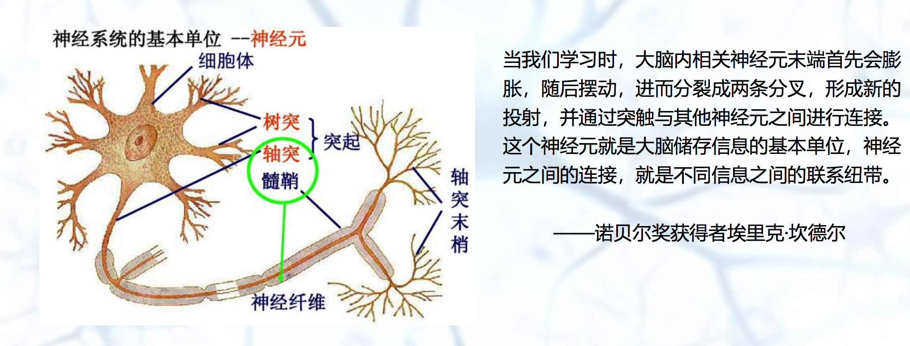
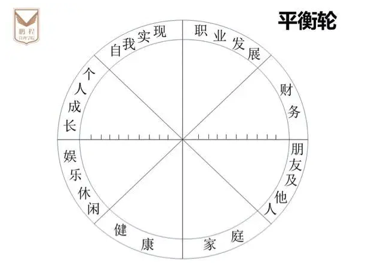

最近去上了门课程，关于学习力，具体讲如何在知识变化、碎片化、专注度、动力、知识系统性等方面高效学习的问题。课程做了些笔记，记录如下（好记性不如烂笔头）。
学习力
学习力不是知识，而是”认知的手段”。包括：
1、理解力
2、消化吸收能力
3、认识系统化能力
4、掌握具体和抽象关系的能力
5、整体和局部把握关系的能力
6、行动和知识结合起来的能力
学习与脑科学
从下面的图中可以了解到，如果经常学习，分叉会越多，连接会越多。

大脑的特点
大脑喜欢哪些事情呢？
1、可视化
2、大局
3、交叉
4、睡眠
5、教人
大脑喜欢吃啥？
1、巧克力
2、牛油果
3、橄榄油
4、蓝莓
5、青菜
6、坚果
知识转化
要学以致用，就必须要记忆。
1、笔记可以写发现与总结，促转化
2、做好笔记的分类管理，可追溯能找到
3、写清晰二次回看3秒看懂，可重现
动机的DVF-贝克哈德公式
简写：D * V * FS > R
即：Dissatisfaction * Vision * First Step > Resistance to Change
即：对现状的不满 对未来的愿景 第一步实践 > 变革阻力
1、D: Dissatisfaction, 对现状的不满
2、V: Vision, 对未来的愿景
3、FS: First Step, 第一步实践
4、R: Resistance to Change, 变革阻力
变革公式说明了发生在个人思想、家庭、组织、国家等方面的真正转变，需要包括的三个必要因素，即D、V、FS。为了改变的持续性，上述三者的乘积必须大于 RC，即当前对变革的抗拒力量。非常重要的是，“对现状的不满”、“对未来的愿景”及“第一步实践”三者之间是相乘的关系，也就是说假如其中任何一项不存在，为零，真正的转变就不会发生。
是乘积的关系，只要其中任何一个为0，另外两个再大也没有用。
怎么用变革公式促个人转变
通过镜子/标杆发现不满-Dissatisfaction
借助外力来形成更加客观、 准确的自我评价，找到Gap。
1、向外看，优秀同事，参加展会，与牛人交流等
2、向内看，盘点自己有哪些优势劣势
3、向前看，看看过去几年的自己和现在的自己的变化
4、向远看，一年，两年，五年后的自己是怎样的
感觉老师的这个没有办法很好的衡量自己最大的不足点，只是大致的一个可执行的方向。这里我还去查了些资料，也可以用平衡轮方法，把自己生命中最重要的的组成部分画个平衡轮，然后打分。进而发现自己的不满。

通过想象激发你的期待-Vision
◼ 想象未来的收益
◼ 想象可能出现的美好世界
➢ 建立实现成功的时间表
➢ 想象自己正处在这样的时光中
➢ 描述未来可能获得的成功看起来和感觉起来怎样
➢ 提取关键事证(学习成功后，会如何体验这些益处)
哈哈哈啊哈，我自己就经常幻想在可能出现的美好世界中。
执行第一步（重点）
1、分解目标
2、即可开始
3、隔绝干扰
具体可以做的可能是：专注简短而重要的工作，比如番茄工作法，每次25分钟，我觉得还需要建立优先级。建立习惯清单，养成新的信号反应机制，比如固定读书时间， 每天读10页书，每周做一次总结，项目结束后复盘等。 加入学习团体，打卡，重塑习惯。
千万不要想着：吃完这顿，明天再开始减肥吧。☹️
千万不要想着：吃完这个冰淇淋，我就回房间看书了。🐷
哈哈哈，这个深有体会。
高效的学习
1、有效的输入
2、高效的输出
找到有效的学习内容
- 选择接近知识源头的内容;
- 选择被验证有效的学习内容;
- 选择高于自己认知，甚至远高于自己认知的内容学习;
- 按图索骥，深挖出高质量的学习内容;
- 打通高质量信息的传播链。
这里我总结理解为要先选对方向和学习内容。就像以前高中那样，先做难题没用，好好把教材要讲的内容搞清楚才好。走正确的路，才能少走弯路。
检测学习
1、清晰的定义学习目标
2、拆解你的学习目标与计划
3、定期Review你的学习
4、利用机会检验你的学习
从全局到细节的学（重要）
如何系统的读书
1、先看目录，尝试用自己的语言提炼成主线
2、提出问题
3、针对性的选择能回到自己问题的内容选读，抓重点
4、读完再尝试回答“这是一本解决什么使命的书”
如何系统的参加培训
1、培训前拿到课程大纲，有全局性认知
2、结合大纲内容提出自己可能的疑问
3、培训中在全局中理解内容
4、关注疑问点是否得到解释
由面到点的学习。由粗糙到细节的学习。也没有必要关注全部细节，抓重点。
如何系统的学
1、构建全景学习图（知识框架）
2、构建个人知识体系
3、化碎片化为系统
简单的来说就是知识需要系统，需要形成自己的图放在脑袋里，遇到问题，就知道哦是这个地方。
如何做高效的输出
1、分享给身边的人 -与人交流学习心得 （说）
2、-沉淀 - 转发 - 封装 （写）
3、指导他人 - 培训授课 （教）
4、- 刻意练习 -RIA学习法 （用）
通过RIA应用所学
R:读取新的知识或信息
I:将学到的知识或信息通过自己的方式解读出来
A1:描述自己与之相关的经验(通常为过去经历)
A2:我的应用(未来的目标与行动)
学习力的本质
1、追问本质，找到边界 真正知道自己是否知道
2、举一反三，跨界应用 能灵活应用所学知识
总结
这堂课还是收获了些东西的。还有一节《行动学习》的课程本来也想今天一起回忆下，但写着写着发现这篇太长了。现在是星期五的晚上，期待能过个充实的周末。加油⛽️。
这个上课的老师胖胖的，萌萌哒。笑起来的声音非常魔性，感觉不跟他一起笑都对不起他的那种哈哈哈哈。